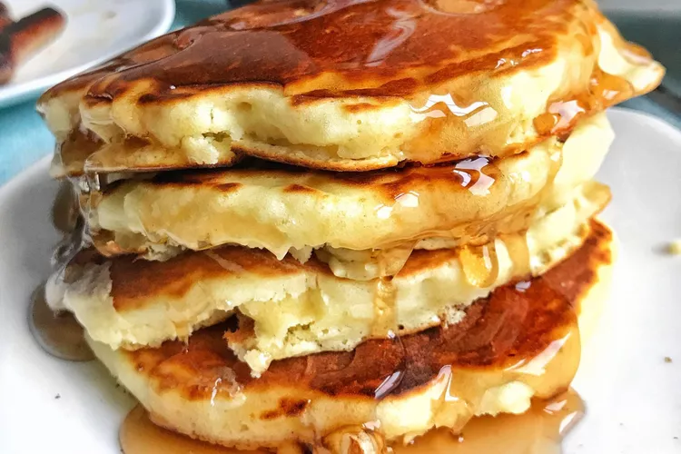

Description
This waffle recipe is the only one you'll need to make homemade waffles with your waffle iron.
Simple pantry ingredients mix up quickly in this easy batter that can be used right away or stored
in the refrigerator for up to a week. Serve waffles hot with whipped
cream and fresh fruit or with butter and maple syrup for either breakfast, brunch, or a snack.
- Eggs: This waffle recipe starts with two whole eggs, whisked until light and fluffy.
- Flour: All-purpose flour adds gluten, which gives the waffles structure. You can also use whole wheat flour.
- Milk: Whole milk lends richness and moisture. Plus, it helps create the ideal batter consistency.
- Baking powder: Baking powder acts as a leavener, which means it contributes to the waffles' light and fluffy texture.
How to Make Waffles
- Make the batter: Whisk the eggs,
then add the flour, milk, and oil. Whisk in the sugar.
Stir in the remaining ingredients.
- Make the waffles: Pour the batter onto the hot, prepared waffle iron.
Cook until golden brown and repeat with the remaining batter.